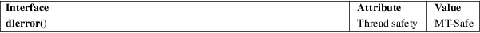

dlerror − obtain error diagnostic for functions in the dlopen API
Dynamic linking library (libdl, −ldl)
#include <dlfcn.h>
char *dlerror(void);
The dlerror() function returns a human-readable, null-terminated string describing the most recent error that occurred from a call to one of the functions in the dlopen API since the last call to dlerror(). The returned string does not include a trailing newline.
dlerror() returns NULL if no errors have occurred since initialization or since it was last called.
For an explanation of the terms used in this section, see attributes(7).

POSIX.1-2008.
glibc 2.0. POSIX.1-2001.
SunOS.
The message returned by dlerror() may reside in a statically allocated buffer that is overwritten by subsequent dlerror() calls.
See dlopen(3).
dladdr(3), dlinfo(3), dlopen(3), dlsym(3)